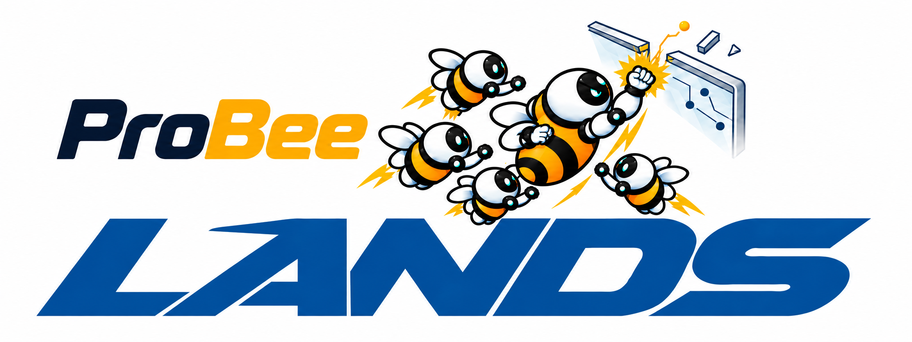

端智能研究小组LANDS（先进网络与数据科学研究组） Nanjing UniversityMeng Li （李猛）
Assistant Professor
School of Computer Science, Nanjing University
Email: meng@nju.edu.cn
Office: CS Building 312
I am an Assistant Professor at Nanjing University’s School of Computer Science and lead the on-device intelligence subgroup within LANDS. I develop models and systems for On-Device Agents (端侧智能体), making intelligent agents practical on everyday devices.
I received my B.S. (2016) and Ph.D. (2023) from Nanjing University. My doctoral dissertation received outstanding dissertation awards from the Chinese Institute of Electronics (CIE), Jiangsu Province, and Nanjing University. I have published over 40 papers in venues including ISCA, SIGMOD, VLDB, and EuroSys, and held visiting research appointments at Alibaba DAMO Academy and NTU.
Recent News
Congrats to Mingxin! Our paper “Scaling LLM Agent Tool Access: The MCP Gateway” has been accepted to ATC 2026.
Our paper “Continual Quadruped Robots Coordination via Semantic Skill Discovery” has been accepted to CoRL 2026.
Congrats to Zhipeng and Junhan (undergraduate) for their learned index paper accepted by VLDB 2027!
Congrats to Ruiben (undergraduate) for his MobileOC paper accepted by UbiComp 2026 Student Research Competition!
Congrats to Guoying for his Edge MoE paper (SMoE) accepted by ISCA 2026!
Earlier updates
Congrats to Ning Zhang and co-authors for SecFinder receiving the Best Paper Award from ICPADS 2025!
Our work on Edge MoE LLM inference was featured by MIT tech review (Asia) and Deeptech.
Congrats to Tao Li and Shizhe for their papers accepted by ICDE 2026!
Congrats to Junfeng for his learned index evaluation paper accepted by EDBT 2026!
Congrats to Keran and Hancheng for their papers accepted by TMC and TPDS!
Congrats to Feifan for his adaptive range filter paper accepted by SIGMOD 2026!
Congrats to Ruiben (undergraduate) and Yihuan for their APWeb 2025 NUMA-aware learned index paper!
Congrats to Guoying for his ICDE 2025 cloud sync paper!
Congrats to Liang Mi for his VaLoRA paper accepted by EuroSys 2025!
Preprints
[Preprint]SmartRAG: Native Graph-Based RAG for Mobile Device arXiv preprint arXiv:2607.14661, 2026.
Selected PublicationsFull list
[ATC'26]Scaling LLM Agent Tool Access: The MCP Gateway Accepted to the ACM SIGOPS Annual Technical Conference (ATC), 2026.
[CoRL'26]Continual Quadruped Robots Coordination via Semantic Skill Discovery Accepted to the Conference on Robot Learning (CoRL), 2026.
[VLDB'27]Replace or Augment: Rethinking the Role of Learned Indexes in Relational Databases In Proceedings of the 53rd International Conference on Very Large Data Bases (VLDB, CCF-A), Athens, Greece, Aug 23-27, 2027. (*Corresponding Author*)
[ISCA'26]SMoE: An Algorithm-System Co-Design for Pushing MoE to the Edge via Expert Substitution In Proceedings of the 53rd Annual International Symposium on Computer Architecture (ISCA, CCF-A), Raleigh, USA, June 27-July 1, 2026. (*Corresponding Author*)
[SIGMOD'26]Hourglass: An Adaptive Range Filter with Lightweight Hybrid Encoding The 52th ACM SIGMOD/PODS International Conference on Management of Data (SIGMOD, CCF-A), 2026. (*Corresponding Author*)
[EuroSys'25]Empower Vision Applications with LoRA LMM In Proceedings of the 20th ACM European Conference on Computer Systems (EuroSys, CCF-A), Rotterdam, The Netherlands, March 30-April 3, 2025. (*Corresponding Author*)
[SIGMOD'25]VEGA: An Active-tuning Learned Index with Group-Wise Learning Granularity In Proceedings of the ACM Conference on Management of Data (SIGMOD, CCF-A), Berlin, Germany, June 22-27, 2025.
[VLDB'24]Oasis: An Optimal Disjoint Segmented Learned Range Filter In Proceedings of the 50th International Conference on Very Large Data Bases (VLDB), Guangzhou, China, Aug 28-Sep 1, 2024.
[INFOCOM'24]The Reinforcement Cuckoo Filter In Proceedings of the 23rd IEEE International Conference on Computer Communications (INFOCOM), Vancouver, Canada, May 20-23, 2024.
[VLDB'23]ShadowAQP: Efficient Approximate Group-by and Join Query via Attribute-oriented Sample Size Allocation and Data Generation In Proceedings of the 49rd International Conference on Very Large Data Bases (VLDB), Vancouver, Canada, Aug 28-Sep 1, 2023. (*Corresponding Author*)
[WWW'22]Seesaw Counting Filter: An Efficient Guardian for Vulnerable Negative Keys During Dynamic Filtering In Proceedings of the World Wide Web Conference (WWW), Lyon, France, April 25–29, 2022.
[VLDBJ'22]A Pareto Optimal Bloom Filter Family with Hash Adaptivity The VLDB Journal (VLDBJ), 2022.